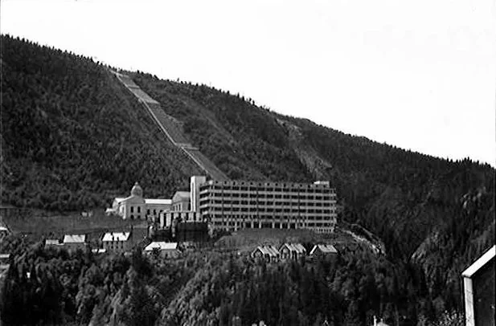
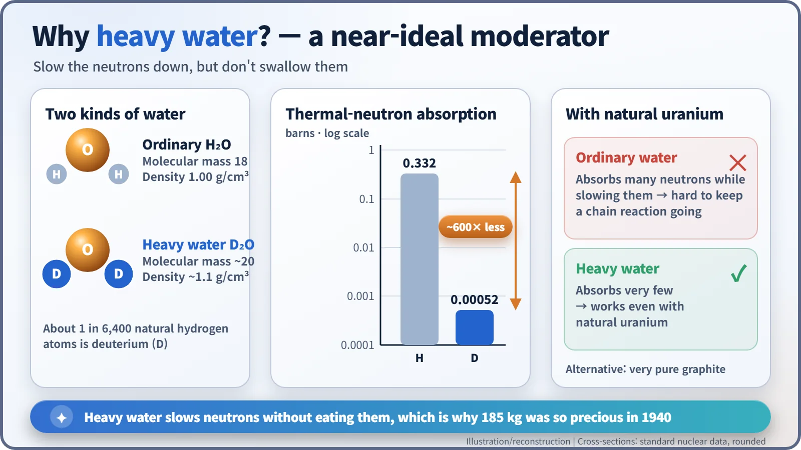
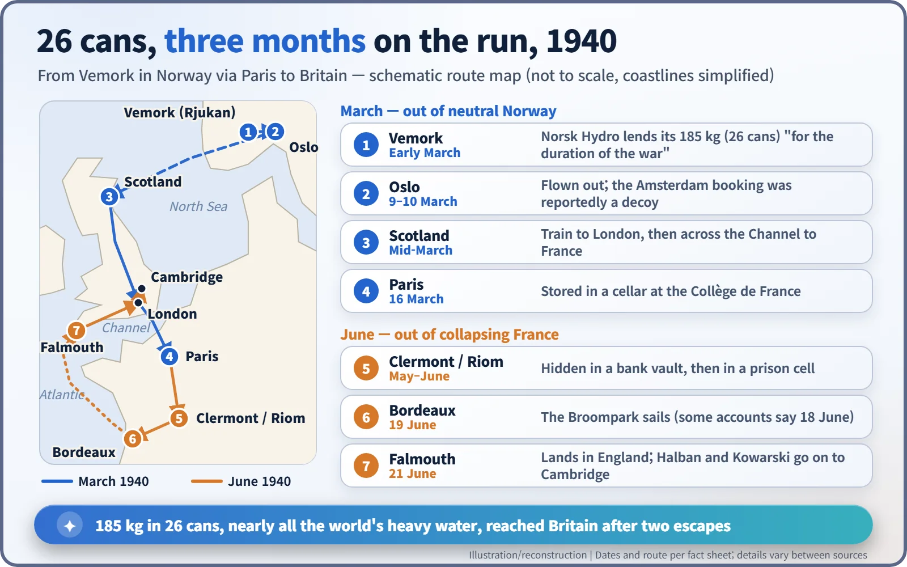

Nuclear History · 072
Smuggle the 26 Cans — France's Heavy Water Operation in Norway (1940)
Twenty-six cans, nearly all the world's heavy water, escaped twice in three months: first from neutral Norway, then from collapsing France.
In March 1940 a French banker-turned-intelligence-officer, Jacques Allier, spirited 185 kg of heavy water, nearly the whole world's supply, out of neutral Norway in 26 cans. Three months later, as France collapsed, the physicists Hans von Halban and Lew Kowarski carried the same cans out of Bordeaux on the British collier Broompark. The cargo went on to underpin early British and Canadian reactor research.
"I will probably be shot"
"If Germany wins the war, I will probably be shot." That, according to the story usually told, is what Axel Aubert (1873–1943), general director of the Norwegian company Norsk Hydro, said in early 1940. Across the table sat a banker from Paris who was really a French intelligence officer, and what he wanted was 185 kilograms of "heavy water". Aubert did not haggle. Take all of it, he is said to have replied; France could borrow it for the duration of the war. [4]
A banker with a secret brief
The banker was Jacques Allier (1900–1979). At the Banque de Paris et des Pays-Bas he handled the bank's dealings with Norsk Hydro. When war came in 1939 he was called up as a reserve officer, attached to the office of Armaments Minister Raoul Dautry, and worked for French military intelligence, the Deuxième Bureau. In February 1940 Dautry gave him a quiet assignment: buy Norsk Hydro's stock of heavy water and bring it to France. [1]
Why Norway? Because the Vemork plant at Rjukan, in the Telemark region, was the first facility in the world to produce heavy water on an industrial scale. Built in 1934, it was rated at 1.2 tonnes a year, but in practice it could turn out at most about 10 kg a month. Meanwhile the German chemical giant IG Farben had been asking for 100 kg a month. [4]

What made heavy water so precious?
Heavy water is water in which ordinary hydrogen is replaced by deuterium, a form of hydrogen whose nucleus holds a neutron as well as a proton, making it twice as heavy. Only about 1 hydrogen atom in 6,400 in nature is deuterium, so concentrating it takes a great deal of cheap electricity.
In 1939 Frédéric Joliot (1900–1958) and his team at the Collège de France in Paris had shown that a splitting uranium nucleus releases several neutrons. The next goal was a chain reaction. The snag was speed: neutrons from fission are fast, and fast neutrons are poor at splitting uranium-235. You need a moderator, a material whose light nuclei the neutrons bounce off until they slow down. [6]
Ordinary water slows neutrons nicely, but its hydrogen also swallows a lot of them, so with unenriched natural uranium a chain reaction is hard to sustain. Deuterium absorbs neutrons roughly 600 times less readily than ordinary hydrogen. Think of a bouncer who calms the crowd without throwing anyone out. With heavy water, natural uranium had a real chance of working.

The switch at Oslo airport
With Aubert's agreement, Allier's team moved the 185 kg, packed in 26 cans, to Oslo. It was virtually the world's entire supply. [2]
According to an often-repeated account, around 10 March Allier booked seats on a flight to Amsterdam but actually loaded the cans onto a plane bound for Scotland. The Amsterdam flight, the story goes, was intercepted by the Luftwaffe and forced down in Hamburg. Sources disagree on where the Scottish plane landed (Perth, Montrose and Edinburgh are all mentioned). What is clear is that the heavy water travelled via Scotland and London, by train and boat, to Paris, where it was stored in a cellar of the Collège de France around 16 March. Germany invaded Norway on 9 April, a few weeks later. [4]
The second escape: the collier Broompark
The relief did not last. When German forces broke through in the west in May, the cans were sent south to a bank vault in Clermont-Ferrand and then hidden in a cell in the prison at Riom. Around 16–17 June Allier collected them again; it is said that when the prison governor hesitated, Allier drew a pistol.
Joliot decided to stay in France. Instead, Hans von Halban (1908–1964) and Lew Kowarski (1907–1979) set off for Bordeaux with the heavy water, their research papers and a gram of radium. Waiting there was Charles Howard, 20th Earl of Suffolk (1906–1941), a scientific liaison officer for Britain's Ministry of Supply, who had secured passage on a British coal ship, the SS Broompark. [5]
The Broompark sailed down the Gironde estuary on 19 June (some accounts say 18 June). On board were about a hundred people, including 33 scientists and technicians with their families, roughly 600 tons of machine tools, a fortune in diamonds and, lashed to the deck, the 26 cans of heavy water. On 21 June she reached Falmouth in Cornwall safely. [3]

What 185 kilograms left behind
In Britain the heavy water was kept first at Wormwood Scrubs prison in London and later at Windsor Castle. Halban and Kowarski carried on at the Cavendish Laboratory in Cambridge and by December 1940 had results showing that a heavy water and uranium oxide system could sustain a chain reaction. In 1942 Halban's team and the heavy water moved to Montreal, and Kowarski later led the design of ZEEP, Canada's first reactor. [1] [2]
The Earl of Suffolk was killed in May 1941 while defusing an unexploded bomb. In occupied Norway, meanwhile, Germany expanded heavy water output at Vemork, and from late 1942 the Allies set out to stop it; that is a story for another day. A few cans did not decide the war on their own, but they clearly shaped where the early lead in reactor research would lie. [5]